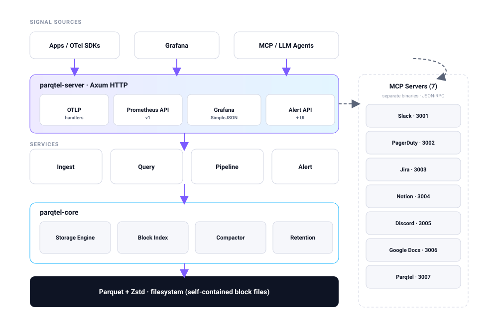
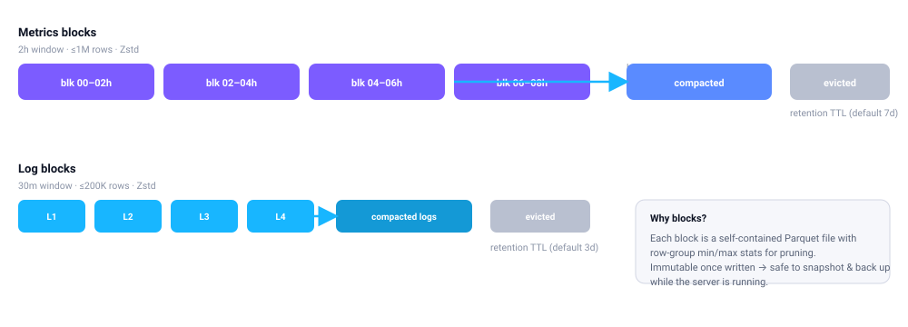
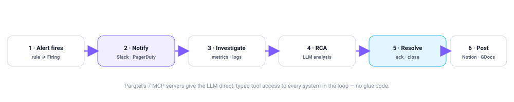

Parqtel streams OpenTelemetry metrics, logs, and traces into compressed Apache Parquet — with a Prometheus-compatible query API, a Grafana datasource, built-in alerting, and 7 AI-native MCP servers.
Every design decision trades operational weight for throughput and durability — so you can keep months of signals on commodity storage.
Single static binary, ~15 MB distroless image, zero external datastore. Runs on edge ARM boxes or a single pod.
Block-based Apache Parquet with Zstd/Snappy/LZ4 compression — 10–20× smaller than Prometheus TSDB for long retention.
Prometheus /api/v1/* and Grafana SimpleJSON mean your existing dashboards keep working unchanged.
Instant & range queries, label matching, and aggregations: rate, irate, histogram_quantile, and more.
YAML rules, threshold & anomaly detection, a full state machine, and a 15s evaluation loop with noise scoring.
7 Model Context Protocol servers give LLMs direct, typed tool access for automated incident response.
| Problem | How Parqtel helps |
|---|---|
| Low-cost archiving | Stream OTel data to Parquet for long-term storage with ~90% compression versus Prometheus TSDB. |
| Edge observability | Deploy on resource-constrained edge/IoT devices for local-first telemetry with no cluster to babysit. |
| Log-to-metric pipelines | Extract business metrics from high-volume Nginx or app logs with declarative YAML pipelines. |
| AI incident response | Point MCP servers at your telemetry so LLMs can investigate and write RCAs autonomously. |
| Serverless monitoring | Ingest ephemeral logs/metrics from Lambda or Cloud Run without running a heavy backend. |
Sustained 1,000 samples/sec (metrics + logs + traces) for 15 minutes on commodity hardware — zero errors.
Hot-path optimizations (non-blocking flushes, row-group pruning, per-chunk label caching) are detailed in the performance benchmarks. Scan throughput improved +39% after pruning.
A single Axum binary handles ingestion, querying, pipelines, and alerting on top of parqtel-core. MCP servers run as independent sidecars.

| Crate | Responsibility |
|---|---|
parqtel-core | Data models, storage engine, block index, compaction, retention, configuration. |
parqtel-ingest | OTLP protobuf/JSON decoding, block rotation, crash-safe Parquet writing. |
parqtel-query | PromQL-compatible execution, label matching, aggregation functions. |
parqtel-alert | Rule registry, threshold evaluation, alert state machine, alert store. |
parqtel-pipeline | Recording rules, stream processing pipelines, PromQL/DQL evaluation. |
parqtel-server | Axum HTTP server, route handlers, middleware, telemetry, built-in UI. |
parqtel-mcp-core | Shared MCP framework: JSON-RPC, rate limiting, tool registry. |
parqtel-mcp-* | Slack, PagerDuty, Jira, Notion, Discord, Google Docs, Parqtel tool servers. |

2-hour windows, up to 1M rows, Zstd compressed. Retained 7 days by default.
30-minute windows, up to 200K rows. Retained 3 days by default.
Small blocks merge automatically (hourly); row-group stats enable time-range pruning.
Parqtel ships 7 Model Context Protocol servers. An agent can notify, investigate, write an RCA, resolve, and draft the postmortem — without glue code.

Alerts, RCA updates, incident channels.
Incidents, notes, on-call lookup.
Issues, RCA comments, action items.
Incident & postmortem pages.
Alert embeds & RCA threads.
Postmortem docs & sharing.
Query its own metrics & logs.
Shared JSON-RPC, rate limiting, schemas.
docker run -d \
--name parqtel \
-p 8080:8080 \
-v parqtel_data:/var/lib/parqtel \
parqtel/parqtel:latest
curl http://localhost:8080/health # {"status":"ok"}make dev-setup # copies .env, starts stack
# → Parqtel :9090 · Grafana :3000 · Prometheus :9091
# or from source
cargo build --release && ./target/release/parqtel serveParqtel is Apache-2.0 and ready for production. Clone it, run it, and point Grafana at it.